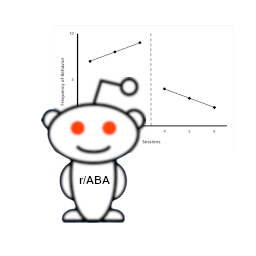
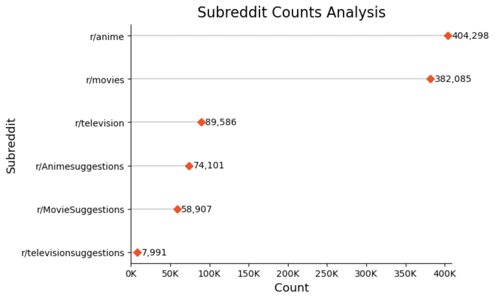

Exploratory Data Analysis
Exploratory Data Analysis (EDA) plays a pivotal role in our project focused on unraveling the dynamics of the Entertainment subreddit within the vast landscape of Reddit. Think of this page as a magnifying glass, focusing on the intricacies of the colossal dataset. Each entry is a chapter in the evolving story, carefully organized for exploration, much like preparing a canvas before an artist begins to paint.
Join us on this analytical odyssey where every data point is a clue, and every visualization is a window into the nuanced landscape of the Entertainment subreddit. The EDA page is where we decode the language of data, bringing you closer to the stories that lie beneath the surface of this dynamic digital community. Welcome to the realm of Exploratory Data Analysis, where understanding the data is the key to unlocking the richness of our Reddit exploration.

Number of missing values in the data
This table represents a summary of missing values in a dataset extracted from Reddit. Each row corresponds to a different feature in the dataset, and the ‘Missing Values’ column quantifies the absence of data entries for each feature.
Columns such as ‘author’, ‘title’, ‘selftext’, ‘created_utc’, ‘num_comments’, ‘score’, ‘over_18’, ‘pinned’, and ‘locked’ show complete data with zero missing values, suggesting they are mandatory fields within the platform’s post submission process.
In contrast, a significant number of missing values are observed in the ‘disable_comments’, ‘distinguished’, and ‘media’ columns. This could indicate that these fields are not always applicable or are frequently left blank. For instance, ‘distinguished’ could denote a special status assigned to certain posts, which would naturally be less common. Similarly, ‘media’ might be optional or applicable only for certain types of posts.
This table is important for understanding the dataset’s structure and quality, and it underlines the need for thorough data cleaning and validation steps before any reliable analysis can be performed.
Analysing the extracted submissions in subreddits
This bar chart provides a comparative analysis of post counts across various entertainment-related subreddits. The ‘anime’ subreddit has the highest number of posts, with over 400,000 entries, indicative of a very active community with a strong interest in anime-related content. This is followed by the ‘movies’ subreddit, which also boasts a high level of activity with more than 380,000 posts. Both ‘anime’ and ‘movies’ subreddits significantly outpace the ‘television’ subreddit in terms of post counts, suggesting a comparatively higher user engagement in the former topics.
Looking at subreddits dedicated to suggestions within these categories (AnimeSuggestions, MovieSuggestions, and televisionsuggestions), there is a clear indication that there is a substantial interest in community-driven recommendations for anime, as the ‘AnimeSuggestions’ subreddit has a higher post count than both ‘MovieSuggestions’ and ‘televisionsuggestions’. The ‘MovieSuggestions’ subreddit has a moderate number of posts, while ‘televisionsuggestions’ has the least, reflecting lower user engagement for television recommendations on this platform.
These differences in post counts may reflect varying degrees of popularity, user engagement, and possibly the availability of content in each entertainment medium. The data suggests that within this online community, users are more likely to seek and share recommendations for anime and movies rather than television shows.

Time-series Analysis
What is the general trend of posts from 2021-2023?
The time-related plots depicting the distribution of posts across the subreddits ‘anime’, ‘movies’, and ‘television’ from 2021 to 2023 reveal a discernible downward trajectory in user engagement and post counts. While the ‘anime’ subreddit shows a pronounced peak, indicative of a temporary surge in activity, it is followed by a significant decline. This pattern suggests that sustaining high engagement levels over time may be challenging, even when punctuated by periods of heightened activity.
In parallel, the ‘movies’ and ‘television’ subreddits exhibit a more gradual decline, implying a slow yet consistent decrease in the number of posts and interactions. This could point to a broader trend of diminishing user participation or could reflect a diversification of discussions across newer platforms or different online communities.
The overarching decline across all three subreddits raises questions about the factors influencing these changes. The possibility of shifting platform dynamics, evolving content consumption patterns, or the rise of alternative entertainment forums could be contributing to this trend. It indicates a potential shift in the digital landscape where traditional subreddit forums may no longer command the same level of attention as before.
This insight suggests an opportunity for subreddit administrators and content creators to re-evaluate their engagement strategies. Exploring innovative content delivery, leveraging interactive media, or tapping into emerging trends could potentially reverse the decline in post counts. As digital platforms continue to evolve, so must the strategies to captivate and maintain active user communities.
How are scores affected by posting on different days of the month?
The line chart titled “Average Score by Day of Month Across Subreddits” offers a detailed visual of how user engagement varies throughout the month within the subreddits of ‘movies’, ‘anime’, and ‘television’. The ‘movies’ subreddit demonstrates the highest variance in average scores, suggesting that certain days of the month may align with the release of popular content, leading to spikes in user interaction and high-scoring posts. In contrast, ‘anime’ and ‘television’ subreddits exhibit a more consistent pattern of engagement, with less pronounced peaks and troughs.
The trend across all three subreddits does not show a clear cyclical pattern that could be associated with specific days of the month, indicating that post scores are more likely influenced by content availability and user interest rather than the time of the month. The relative stability in ‘anime’ and ‘television’ subreddits could imply a steady production of content that resonates with the audience, leading to a more uniform level of engagement.
This insight into user behavior could be harnessed by content creators and marketers to strategically time their posts to coincide with peak engagement periods identified within the ‘movies’ subreddit. Moreover, the consistent engagement in the ‘anime’ and ‘television’ subreddits suggests a reliable and dedicated audience base, which could be attractive to advertisers and collaborators looking for stable platforms to promote their products or services. Overall, understanding these engagement patterns is crucial for optimizing content delivery and maintaining a vibrant and interactive online community.
Analysis of the number of posts during the week
The sunburst chart provides a vivid depiction of the distribution of posts across days of the week and hours of the day for the subreddits ‘anime’, ‘movies’, and ‘television’. It reveals the time-specific activity patterns within these communities. For the ‘anime’ subreddit, there’s a notable concentration of activity during certain hours, which may correspond to peak times when users are most active or when new content is typically released. The ‘movies’ subreddit shows a more spread out activity throughout the week, suggesting a consistent level of engagement without significant peaks or troughs.
This visual suggests that the ‘television’ subreddit has its own unique pattern of user interaction, potentially reflecting the airing schedule of popular shows or weekly events that drive discussions. Understanding these patterns can help content creators and moderators to optimize their engagement strategies by scheduling posts and discussions during high-activity windows to maximize visibility and interaction.
Overall, these insights highlight the importance of timing in online community engagement. For marketers and content creators, aligning content releases with these observed peaks could enhance user engagement. For platform moderators, it could inform the scheduling of events or AMAs (Ask Me Anything sessions) to ensure higher participation rates. Additionally, this data could assist in the strategic placement of advertisements, ensuring they reach the most active audience segments.
User Engagement Analysis
Leading Content Creators based on top Comments
The bar chart presents the post counts attributed to the ten most active authors within the subreddits “movies, anime, and television”. These counts are a direct indicator of the quantity of content contributed by individual authors rather than the quality or engagement level of the posts.
The presence of active contributors can be vital for fostering community engagement and providing a steady stream of content for discussion. On the other hand, the steep drop in post counts after the third author indicates that there is less parity in content contribution among the top authors. The remaining seven authors in the list show a relatively lower level of activity, with post counts ranging from moderate to minimal. This disparity suggests that a small group of authors may dominate the conversation or content within this subreddit.
The movies subreddit appears to have a few highly active authors who contribute a significant portion of the content. This concentration of activity might influence the diversity of topics and perspectives presented within the community.
In the television subreddit, the distribution of post counts among the top ten authors reveals a significant skew, with ‘MarvelsGrantMan136’ and ‘Neo2199’ being the most active. This pattern suggests that the television subreddit may rely on a small group of dedicated individuals for a substantial portion of its content, which could potentially influence the scope and variety of discussions within the community.
Contrastingly, the anime subreddit presents a unique scenario where bots, rather than human authors, are the primary content contributors. Interestingly, despite—or perhaps because of—the automated nature of their posts, these bot-generated discussions are engaging the community to a greater extent than typical human-authored posts on the platform. This could be attributed to the bots providing timely, consistently formatted, and relevant content that resonates well with the subreddit’s audience.
The high engagement with bot posts in the anime subreddit may also reflect the community’s preference for structured information, such as regular updates on anime releases, episode discussions, and well-organized recommendation lists. These automated posts may fulfill the community’s needs more effectively than the more varied human contributions found in other subreddits.
In light of this, the anime subreddit stands out as a unique case study in community engagement on social platforms, showcasing that automated systems, when well-tuned to the audience’s preferences, can play a pivotal role in fostering active online communities. This insight challenges the conventional wisdom that the most engaging content must be human-generated and highlights the potential for bots to contribute meaningfully to online discourse in interest-specific forums.
Leading Content Creators based on top Scores
The bar chart depicts the top 10 authors by post count within the anime, movies, and television subreddits, with a specific focus on those receiving the highest scores, which could be indicative of the popularity of the posts.
‘AutoLovepon’ leads in the anime subreddit with an exceptionally high post count, indicating a significant impact on the community, likely due to consistent, high-quality content, which could be automated. In the movies subreddit, ‘MarvelsGrantMan136’ dominates but is followed by a group of authors with notable contributions, reflecting a community with diverse yet influential voices. The television subreddit shows ‘MarvelsGrantMan136’ leading, with a narrower margin over ‘chanma50’, suggesting a broader spread of engagement across various authors. These patterns highlight different engagement dynamics, with a single dominant presence in anime and a more varied influence among authors in the movies and television subreddits, offering insights into community preferences and influencer identification.
Conclusion for Engagement Analysis:
The comparative analysis of the post counts from the top authors across the anime, movies, and television subreddits reveals distinct patterns of community engagement and content contribution. In the anime subreddit, the dominance of the bot ‘AutoLovepon’ highlights a preference for structured, automated content, which contrasts sharply with the human-driven contributions in the movies and television subreddits. In movies, a few authors, particularly ‘MarvelsGrantMan136’, contribute a majority of the content, suggesting a central role in driving discussions and shaping the subreddit’s narrative. Conversely, the television subreddit demonstrates a more balanced distribution of post counts among the top authors, indicating a diverse range of discussions and viewpoints. These patterns underscore the varying dynamics of online communities and the different roles that authors, whether human or automated, play in shaping the content and discussions within these digital spaces. This analysis not only provides insights into the unique characteristics of each subreddit but also underscores the importance of understanding audience preferences and engagement styles when creating or moderating content in online communities.